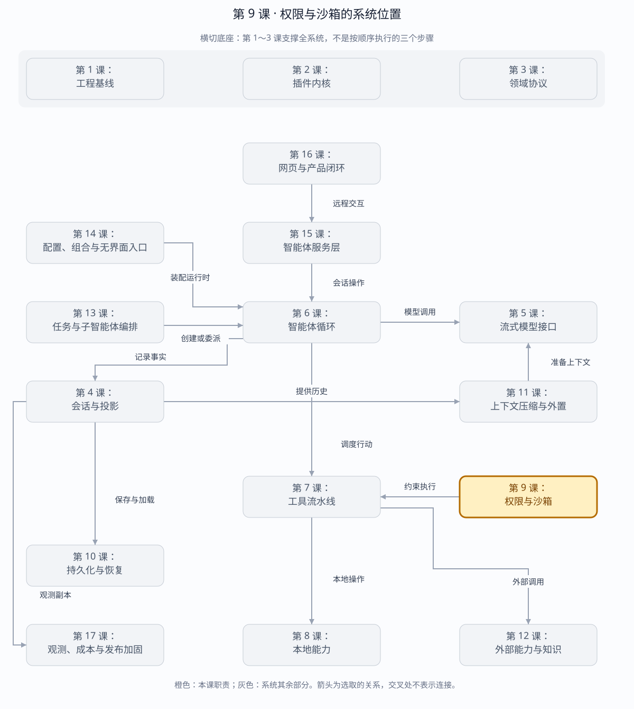

第 9 课：Permission、Approval 与 Sandbox
策略决定默认权限，审批允许单次严格升级，内核沙箱负责真正执行限制，Session 事件负责审计与恢复。
章节概览（可选）：三框架职责摘要
本章对比：DeepSeek Harness / DeepAgents / OpenHands
口径：DeepSeek 依据本地原仓库（99f6f02fecdb），不是 harness-lab；deepagent 按 LangChain DeepAgents 理解；OpenHands 对比当前 Software Agent SDK，不混用旧 V0。在线资料核对于 2026-08-28，描述文档能力，不代表已在本实验室安装或测试。没有依据的同名能力不强行等同。
三者的关键区别：至少分三问：工具是否可见、动作是否获准、进程能触碰什么。三者都不能只用一个“安全模式”概括。（基于上述依据的归纳）
本章在全系统中的位置
围绕工具及执行环境的安全约束层。
下面是本课程的概念地图，不是某框架的逐包调用图，也不表示实验室已默认装配全部能力。三套框架的实际对应关系见上方横向对比表。
全系统定位 · 橙色高亮第 9 课
打开大图 · Mermaid 图源
| 上游与输入 | 待执行动作、策略、路径与网络范围、人工审批决定。 |
|---|
| 下游与输出 | 允许、拒绝或待审批状态，以及执行时的实际隔离约束。 |
|---|
| 不归本章负责 | 人工同意不等于进程隔离；只隐藏工具也不能阻止任意 shell 命令绕过能力列表。 |
|---|
| 放进具体场景 | 读文件可以自动通过，写敏感目录需要拒绝；即使批准跑测试，也应限制进程的文件与网络范围。 |
|---|
接着看下方「可视化图解」：局部模块图解释职责，时序图解释一次调用，分支图解释异常与边界。
本课导览
| 包含内容 | 权限模式、审批策略、单次授权、审计事件、平台沙箱和恢复。 |
|---|
| 涉及模块 | PermissionService、审批响应器、工具效果声明、LocalSandbox、Session 权限投影。 |
|---|
| 白话解释 | 策略先决定默认能做什么；确实需要更多权限时询问用户；操作系统沙箱负责最后一道硬限制。 |
|---|
| 解决的问题 | 避免模型自行扩大权限，让每次高风险操作都有最小授权、可执行限制和可恢复审计记录。 |
|---|
点击下面的概念名称，可直达该概念的三框架实现、区别与依据。原有能力清单、示例和验收描述面向 harness-lab 教学实现；不要将其直接当作上游框架能力声明。
完整能力清单
| 能力 | 具体覆盖 | 安全不变量 |
|---|
| 沙箱模式 | 只读、工作区写入和完全访问三级权限，支持严格单向升级。 | 请求权限不得低于工具实际效果。 |
| 审批策略 | 支持询问与从不询问；审批结果包含单次允许、拒绝、取消和不可用。 | 单次允许不污染后续调用。 |
| 审批交互 | 携带工具、参数、理由、当前模式和请求模式，响应器可异步回答。 | 没有响应器时确定性拒绝。 |
| 取消竞态 | 审批等待可取消，迟到回答被丢弃。 | 一次询问最多产生一个决定。 |
| 审计事件 | 询问、决定、模式和策略写入 Session，并可投影待处理审批。 | 拒绝没有对应询问的孤立决定。 |
| 状态恢复 | 从最后的权限模式和审批策略事件恢复服务状态。 | 进程重启不重置会话权限语义。 |
| 内核沙箱 | macOS 上以平台沙箱执行真实进程，工作区写入仅开放指定目录。 | 策略判断和操作系统强制限制必须同时成立。 |
主概念深挖：授权决策与强制执行
权限系统的上游是工具意图和会话策略，下游是本地执行层；Session 提供可恢复策略，审批提供用户决策，操作系统沙箱负责不可绕过的最终执行。
ToolEffect + arguments（输入）
│
▼
PermissionService ── policy ──► allow / reject
│ 需要升级
▼
InteractionBroker / 用户审批
│ allowed-once
▼
LocalSandbox ─► Process / FS（下游执行）
│
└── ask/decision/mode events（审计输出）
| 背景与目的 | 模型不能成为自己权限的裁判；同时只靠用户弹窗也无法阻止已经获准的进程越界访问。 |
|---|
| 输入与输出 | 输入是工具效果、当前模式、请求模式、理由、策略和取消信号；输出是允许或拒绝决定、审计事件及沙箱执行配置。 |
|---|
| 适用场景 | 只读审查、工作区文件修改、安装依赖、访问工作区外资源和无人值守运行。 |
|---|
| 底层组件 | 三级权限偏序、审批响应器、一次性决定、Session 审计投影、macOS sandbox-exec 规则。 |
|---|
| 核心逻辑 | 先计算工具最低权限，验证请求是严格升级；策略允许询问时记录 ask，首个有效回答写 decision；执行阶段再由 OS 沙箱限制实际系统调用。 |
|---|
| 权衡 | 细粒度审批提升安全与可审计性，但增加交互摩擦；单次授权避免永久放宽，又可能要求重复确认。 |
|---|
| 方案对比 | 仅提示用户属于软约束，工具可绕过；仅沙箱缺少业务意图与审计；两者叠加才能同时回答“应不应该”和“能不能”。 |
|---|
场景穷举
工具请求
├─ 最低权限 ≤ 当前模式 → 直接执行
├─ 严格升级 + ask → 记录询问 → 单次允许/拒绝/取消
├─ 严格升级 + never → 不询问，直接拒绝
├─ 缺少回答器 → APPROVAL_UNAVAILABLE
├─ 非严格或参数不成对 → 提问前拒绝
└─ 已允许 → OS 沙箱仍限制真实访问
| 场景 | 策略结果 | 执行结果 |
|---|
| 只读工具 | 当前只读模式足够。 | 直接运行，但仍受文件边界限制。 |
| 工作区写入 | 用户单次允许升级。 | 仅本次在 workspace-write 沙箱运行。 |
| 越界写入 | 即使业务层错误批准。 | 强沙箱仍拒绝工作区外写入。 |
| 审批取消竞态 | 等待者先取消。 | 迟到允许无效，只写 cancelled 决定。 |
| 冷恢复 | 读取最后模式和策略事件。 | 恢复后继续相同授权语义，不恢复一次性许可。 |
多方案对比
| 方案 | 用户意图 | 强制力 | 缺陷 |
|---|
| 仅提示词约束 | 模型可理解。 | 无。 | 模型或工具可忽略。 |
| 仅审批弹窗 | 明确。 | 弱，批准后无路径限制。 | 无法阻止工具越界。 |
| 仅 OS 沙箱 | 不知道操作理由。 | 强。 | 缺少业务策略和审计。 |
| 策略+审批+沙箱 | 明确且可恢复。 | 强。 | 实现复杂、存在交互摩擦。 |
关键设计反问
- 模型传入 requestedMode 是否等于获得权限？
- 不等于。它只是请求材料，权限服务必须结合工具最低效果、当前模式、策略和用户决定独立判定。
- 为什么单次允许不写成新的会话模式？
- 一次性许可只针对当前工具参数；提升会话模式会让之后所有调用意外继承更高权限。
- 平台没有强沙箱时怎么办？
- 必须在能力探测中明确标记，仅进程隔离不能冒充强沙箱；高风险场景应拒绝而非静默降级。
四层职责
Session policy events
sandbox/mode + approval/policy
│
▼
PermissionService.authorize
├── 当前模式是否足够 ──────────────> execute
├── 未请求升级且不足 ──────────────> SANDBOX_DENIED
└── 请求严格升级
│
├── approval/asked
├── answerer / never / unavailable / cancel
└── approval/decided
│ allowed-once
▼
ToolExecutionContext.sandboxMode
│
▼
Workspace fence / OS sandbox
| 概念 | 生命周期 | 事实位置 |
|---|
| Session sandbox mode | 直到下一次切换 | 最后一条 sandbox/mode |
| Approval policy | 直到下一次切换 | 最后一条 approval/policy |
| allowed-once | 仅当前 call | asked/decided 审计对 |
| 实际约束 | 每次进程/文件操作 | WorkspaceFs fence / Seatbelt runner |
沙箱模式：三框架分别怎么做？
同一个问题：选择只读后，究竟限制了什么操作？
这个概念的区别：先问约束对象是文件工具、shell 文件影响还是整个执行环境，再比较“只读”。
内核沙箱：三框架分别怎么做？
同一个问题：业务层错误放行后，哪一层还能阻止越界？
这个概念的区别：审批回答“是否允许”，隔离回答“最多能做什么”；操作系统限制的覆盖面和降级情况必须单独列明。
严格升级规则
read-only → workspace-write → danger-full-access
sandbox_permissions 与 justification 必须同时出现；
目标必须严格宽于当前模式；
目标还必须满足工具声明的 minimumMode；
approval/policy=never 时不调用任何 answerer；
没有 answerer 时 fail closed。
策略检查不是沙箱。如果只在 TypeScript 里判断后直接启动 bash，恶意或误判命令仍可能越界。本课在 macOS 下实际用 sandbox-exec/Seatbelt 包装 argv；没有可用受限 runner 的平台必须返回 SANDBOX_UNAVAILABLE，不能静默裸跑。
审批策略：三框架分别怎么做？
同一个问题：关闭审批提示，是自动拒绝还是直接执行？
这个概念的区别：DeepSeek 的 never 与 OpenHands 的 NeverConfirm 含义相反：前者不许询问并拒绝需审批操作，后者跳过确认。
审批交互：三框架分别怎么做？
同一个问题：用户看到什么，批准后如何继续？
这个概念的区别：对比审批界面前，先核对请求载荷和恢复入口；教学示例里能展示参数，不代表上游审批 seam 自带参数。
取消竞态：三框架分别怎么做？
同一个问题：等待批准时取消，还能接受迟到的允许吗？
这个概念的区别：比较三个时刻：批准前取消、批准后未执行、工具已开始。暂停等待与杀掉进程不是同一个保证。
运行与调试
cd harness-lab
bun run demo:permissions
VS Code F5 → 08 · 权限与沙箱
# 重点断点
# PermissionService.authorize：模式排序与严格升级
# requestApproval：asked → answer → decided
# executeToolCalls.authorize：body 前权限边界
# LocalSandbox.confine：原 argv → Seatbelt argv
恢复规则
恢复不读取 OTel Logs，也不保存内存里的“已批准”布尔值。长期策略由 Session Event 最后写入获胜；一次性批准只证明历史上的那个 call 为什么执行，不能在恢复后复用。
审计事件：三框架分别怎么做？
同一个问题：审批记录会直接成为模型上下文吗？
这个概念的区别：“能恢复审批”等于保存了控制状态，不自动等于完整业务审计，更不等于要把审计内容全部发给模型。
状态恢复：三框架分别怎么做？
同一个问题：重启后沿用旧权限，还是采用新的默认配置？
这个概念的区别：分别验证会话策略、未决审批和执行环境；不要用“会话恢复成功”替代权限一致性检查。
本阶段验收
TypeScript strict check: passed
tests: 62
pass: 62
fail: 0
覆盖：默认拒绝、allowed-once、never、无 answerer、非严格升级、
参数配对、取消/迟到回答、策略恢复、审计损坏、真实 Seatbelt 限制。
源码
下一课实现 JSONL 持久化、崩溃尾修复、resume 与 fork，回答“中断后究竟从哪里恢复”。
返回完整路线 →